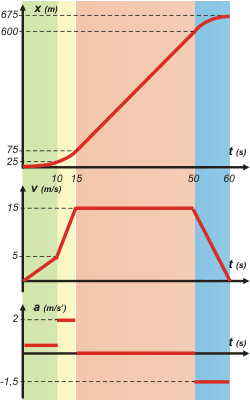

|
NO ME SALEN
PROBLEMAS RESUELTOS DE FÍSICA DEL CBC
(Movimiento uniforme) |
|

|
| Adicional No me salen 22 - Un tren sale de una estación A; acelera a razón de 0,5 m/s2 durante 10 s y luego con aceleración 2 m/s2 hasta alcanzar la velocidad de 54 Km/h. El tren mantiene la misma velocidad hasta que se acerca a la estación B. En ese momento frena uniformemente hasta pararse en 10 s. El tiempo total desde A hasta B ha sido de 60 s. ¿Qué distancia hay entre las estaciones A y B? |
|
| Si leés atentamente el enunciado, verás que se trata de cuatro movimientos diferentes, encadenados entre sí; los dos primeros son variados, el tercero uniforme, el cuarto y último variado, también. Fijate si este esquema te cierra. Lo importante del esquema (entre otras cosas) es que contenga TODA la información disponible del enunciado. |
|
|
 |
|
|
| Vemos que hay cuatro movimientos. LLamémoslos MA, MB, MC y MD. Para ayudarte a interpretarlo les puse a las ecuaciones horarias, al gráfico (más abajo) y al esquema los mismos colores, en correspondencia con cada movimiento. Serán siete las ecuaciones que describen todo el movimiento: dos para cada MRUV y una para el MRU. Para hallarlas reemplazamos las constantes (to, xo, vo y a) de los modelos, por las constantes iniciales de cada tramo o movimiento. Atención: hay que hacerlo muy despacio para no equivocarse. |
|
|
| MA |
x = 0,25 m/s² . t²
v = 0,5 m/s² . t |
| MB |
x = x1 + v1 . ( t – 10 s) + 1 m/s² ( t – 10 s )²
v = v1+ 2 m/s² ( t – 10 s ) |
| MC |
x = x2 + 15 m/s . ( t – t2) |
| MD |
x = x3 + 15 m/s . ( t – 50 s) + ½ aD ( t – 50 s )²
v = 15 m/s + aD ( t – 50 s ) |
|
|
Estas son las ecuaciones que describen TODO el fenómeno del movimiento enunciado. |
Fijate que todas las ecuaciones que acabo de escribir tienen x y t, o v y t, es decir, tienen las variables (te las remarqué en rojo): hablan de todas las infinitas posiciones por las que se desplaza el móvil y sus respectivos instantes de tiempo. Lo mismo con las velocidades que va teniendo. Esta es la parte importante de la cinemática, que vos podrás trasladar a otras áreas del conocimiento.
Es cierto que cada una por sí sola no responde inmediatamente tus preguntas... hay muchas constantes que todavía no conocemos... pero el conjunto de ecuaciones, actuando en conjunto, es capaz de responder todo lo que le preguntes.
Por ejemplo, pidámosle a cada una que hable del punto final de cada tramo: |
|
|
 |
x1 = 0,25 m/s². (10 s)²
v1 = 0,5 m/s² . 10 s
x2 = x1 + v1 . (t2 – 10 s) + 1 m/s² (t2 – 10 s)²
15 m/s = v1 + 2 m/s² . (t2 – 10 s)
x3 = x2 + 15 m/s . (50 s – t2)
x4 = x3 + 15 m/s . (60 s – 50 s) + ½ aD (60 s – 50 s)²
0 m/s = 15 m/s + aD (60 s – 50 s) |
[1]
[2]
[3]
[4]
[5]
[6]
[7] |
|
|
 |
Me lo temía... nos quedó un sistema (por eso le dibujé una llave) de siete ecuaciones con siete incógnitas (x1, v1, x2, t2, x3, x4 y aD). ¡Uy, qué miedo, mirá, está por darme un patatús! Cobarde... cuchá: lo importante es que te des cuenta de que acá terminó la física del problema; el resto es álgebra. Y para que veas que se trata de una soberana pavada te lo voy a resolver yo... no es nada difícil. Y te hago los gráficos que faltan. |
|
|
De [1] y de [2]
x1 = 25 m
v1 = 5 m/s
con estos voy a [4]
t2 = 15 s
y ahora a [3]
x2 = 75 m
Con todo lo averiguado vamos a [5]
x3 = 600 m
ahora vamos a [7]
aD= — 1,5 m/s²
|
|
 |
|
|
|
y con este valor y el de x3 terminamos el recorrido en [6] |
|
|
|
|
|
| COMENTARIO: Habrás visto que planteé la resolución del problema usando un único SR. Vas a encontrar que el resto de los mortales resuelve este problema (y todos los de este tipo) considerando cada movimiento como independiente. O sea, que cada uno empieza en un cierto instante que siempre vale cero de una posición que también vale cero. Cuando los veas hacer esas cosas no te rías; es simplemente que son principiantes... ya van a madurar. |
|
|
|
| |
|
|
| DESAFIO: Rehacer el ejercicio pero tomando un SR con el cero de los tiempos y posiciones en el punto 2 de mi esquema. |
|
 |
| |
|
| Algunos derechos reservados.
Se permite su reproducción citando la fuente. Quien no cite la fuente será penado con reclusión en la Antártida y trabajos forzados. Agradezco la colaboración de Fernando Diego García Haoys que consiguió este original ejercicio y revisó la resolución. Última actualización may-09. Buenos Aires, Argentina. |
|
|
| |
|